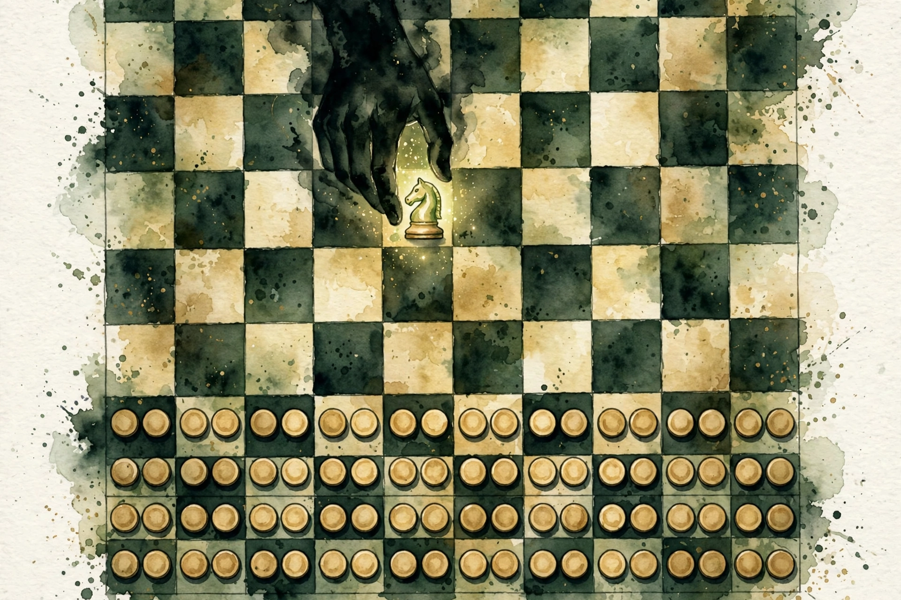
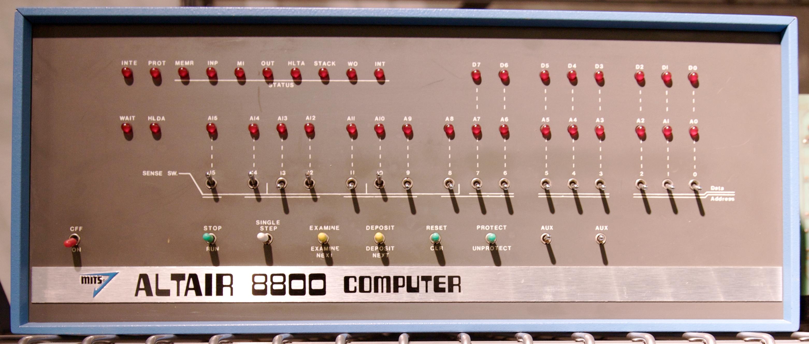
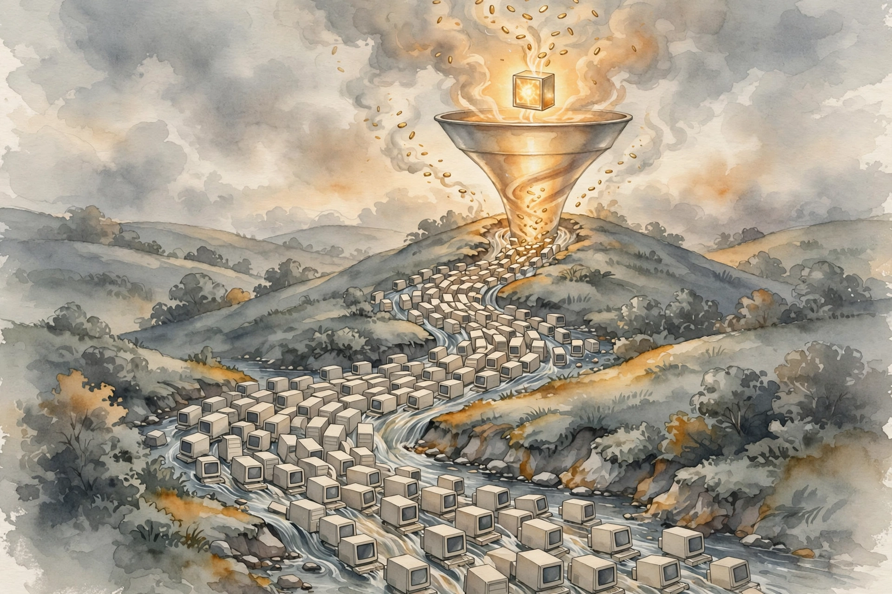
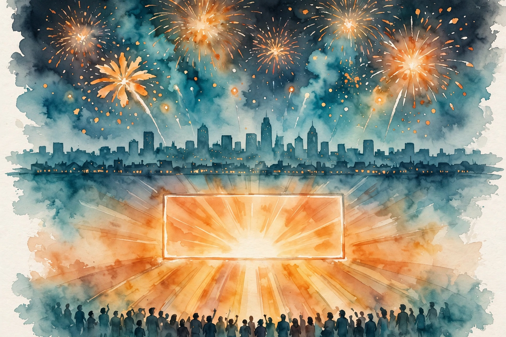

Acquired · Episode 6 · Companion
Microsoft Volume I: Founding through Windows 95
Two teenagers turned a $75,000 operating system into the world's most valuable company. The IBM deal, the clone wave, the hedge called Windows: this is the story of software's best business model, chapter by chapter.

Illustration. IBM played checkers. Bill played chess. AI-generated watercolor.
Listen. The official Acquired episode audio (about 4 hr 5 min). Times below are proportional estimates from the transcript, which carries no timestamps.
The Wisdom Index: every nugget in this companion
- The dinner table is a curriculum
- Royalty, not hourly
- Code to the manual
- The escape clause is the deal
- The $75,000 empire
- The price sheet chose the winner
- Let the giant build demand, then tax the clones
- Hedge, then read the world
- 49 percent: control is a strategy
- Software is never done
- Copy without shame, win on the platform shift
Source fact A claim from the episode transcript. Interpretation My read on what it means. Times marked ~ are proportional estimates from word position, since the transcript has no timestamps.
~00:09
The Household That Bred a CEO
Source fact Bill Gates III, "Trey," was born in 1955 in Seattle. His father, Bill Gates Sr., came from Bremerton, served in the Army in World War II, then earned an undergraduate and law degree at the University of Washington in four years on the GI Bill. He co-founded the firm Preston Gates and Ellis, today K&L Gates, one of the world's largest law firms. He later joined Costco's board, started Seattle's Tech Alliance, and became a prolific angel investor.
His mother, Mary Maxwell Gates, was, in the episode's word, a force. From a banking family, she joined nonprofit boards as a young woman: the Seattle Symphony, the Chamber of Commerce, Children's Hospital, the United Way. She was so effective that corporate boards recruited her: First Interstate Bank, KIRO television in Seattle, Pacific Northwest Bell Telephone, the University of Washington Board of Regents, the national United Way board. She never worked full-time in a corporation and became one of the most powerful business people in the Pacific Northwest.
Young Bill grew up with CEOs, senators, and governors at the dinner table, absorbing business conversation nightly. At 13, he and his best friend Paul Allen discussed not whether but which company Bill would be CEO of someday. He was insanely competitive about everything.
Nugget 1 · Origins
The dinner table is a curriculum
What happened. Bill absorbed business nightly from CEOs, senators, and governors at his own dinner table. His mother ran boards without ever holding a corporate job. Ambition was the household language before it was a plan.
Why it matters. At 13 he and Paul Allen debated which company he would lead, not whether. Exposure sets the ceiling of imaginable outcomes. Most founders never get the ceiling raised early.
The principle. You cannot want what you have never seen. Put yourself, early and often, in rooms where your target outcome is normal conversation.
~00:12
Lakeside: The Teletype and Traf-O-Data
Source fact In 1968, the Lakeside mothers' club bought the school a teletype terminal and rented time on a GE computer downtown. Bill and Paul fell in. Their first venture, Traf-O-Data, analyzed traffic data. The key decision: instead of charging hourly for their time, they took a royalty on the revenue their software generated. Teenagers, inventing the software business model. They made at least $10,000 from the royalties when average US household income was below $10,000.
Nugget 2 · Business models
Royalty, not hourly
What happened. Two teenagers chose a royalty on revenue their software generated instead of hourly billing, and out-earned the average American household. The pricing decision, not the code, was the innovation.
Why it matters. Hourly billing caps you at your hours. A royalty ties you to the value created, which scales without you. Microsoft's entire later fortune is this decision at planetary scale.
The principle. Price on the value the work creates, not the time it takes. If the value scales and you do not, you priced wrong.
~00:35
The Altair: Code to the Manual

Photo. The Altair 8800, the $397 kit that started the microcomputer era. Source: Wikimedia Commons, Computer History Museum exhibit photo.
Source fact In 1975, Popular Electronics put the Altair 8800 on its cover: a $397 computer kit from Ed Roberts's MITS. The next cheapest computer anyone could buy cost around $120,000. Paul saw the cover and knew the microcomputer era began, and that it needed software. They had no Altair. Paul wrote an emulator for the Intel 8080 chip on Harvard's computer, working from the chip manual. Bill wrote the BASIC interpreter against the emulator in a few weeks. They built software for a machine they never touched. The manual was their only spec.
The partnership started at 60/40, Bill to Paul, later 64/36. Bill's argument: Paul held a job and worked on the side. Bill was all in. Paul agreed.
The MITS contract had two fateful terms. First, Microsoft's lifetime revenue from MITS was capped at $180,000: effectively, Ed Roberts offered $180,000 for exclusive rights to everything. Second, the contract required MITS to use its best efforts to license and commercialize BASIC broadly, with failure as grounds for termination. The hosts' verdict: Thank God Bill's dad is a lawyer.
Reality: 1975 revenue was $16,000. 1976 was $22,000, less than Traf-O-Data money. MITS controlled sales, sat on licensing deals with NCR, GE, and Control Data, each worth about $100,000, and turned most away. Then in May 1977, Pertec bought MITS for $6.5 million. Pertec figured it could handle "this kid." Ed Roberts later said it was like Roosevelt telling Churchill he could deal with Stalin.
Microsoft invoked the best-efforts clause and won free of MITS at the end of 1977. Revenue that year: $381,000, nearly all of it in the last month, after zero for the first eleven. Bill bought a green Porsche 911 and collected speeding tickets around Albuquerque, and his mug shot.
Nugget 3 · Execution
Code to the manual
What happened. With no Altair in hand, Paul emulated the 8080 from its manual and Bill wrote BASIC against the emulator. They shipped working software for a machine they had never touched.
Why it matters. Waiting for the hardware would have meant missing the window. Abstraction let them build in parallel with reality. Speed came from refusing to be blocked.
The principle. When the platform is not ready, build against its spec. The emulator is always faster than the hardware.
Nugget 4 · Contracts
The escape clause is the deal
What happened. The $180,000 cap gave MITS all the upside and starved Microsoft to $22,000 in 1976. The best-efforts clause, written by a lawyer's son, gave Microsoft the exit. Arbitration set them free at the end of 1977.
Why it matters. The clause that saved the company was negotiated when they had no power and no idea they would need it. Contracts are written for the future you cannot see.
The principle. Name the one term in your most important agreement that lets you leave if the other side stops trying. If you cannot name it, you are in the MITS position.
~01:10
1978-1980: The Team Assembles
Source fact Revenue: $1.3 million in 1978 with 13 employees, $2.4 million in 1979 with 25 employees. The company moved from Albuquerque to Seattle. In 1980, two pillars arrived: Steve Ballmer joined in June as employee number 30, and Charles Simonyi, poached from Xerox PARC, brought structured programming discipline.
Context the episode insists on: in 1980, IBM was the most valuable company in the world, bigger than all the oil companies. The IBM PC project, codenamed Project Chess, was Big Blue's skunkworks attempt to enter microcomputers in a year. The technical opening: Intel's 8086, a 16-bit processor, enough for real business software. Moore's law compounded invisibly underneath everything.
~01:25
The IBM Deal: The Best Negotiation in Business History
Source fact By August 1980, Microsoft and IBM were in serious talks. The whole 30-person company pivoted to Project Chess, a bigger team than IBM's own. Microsoft needed an operating system for the 16-bit machine and had none. Tim Paterson at nearby Seattle Computer Products wrote QDOS, the "quick and dirty operating system." Microsoft first licensed it, then paid another $50,000 for full rights to own, sell, and license it to anyone else indefinitely. Total changing hands: about $75,000. Microsoft did substantial work turning it into DOS, but the seed was $75,000.
The IBM contract's shape is the whole story. Per Paul Allen's memoir, IBM paid Microsoft $75,000 for testing and consultation, $45,000 for DOS, and $310,000 for language interpreters and compilers: $430,000 fixed, with no ongoing obligation, no per-copy royalties. Every copy IBM sold paid Microsoft nothing more.
Then IBM's price sheet did Microsoft's work. On the IBM PC, the operating system was a menu: Pascal for an extra $450, CP/M for an extra $175, DOS for $60. DOS was built for the machine and cheapest. IBM kept the $60 as pure margin, so its incentives pointed customers at DOS. Everyone chose DOS.
The price sheet that chose DOS
What IBM charged for each operating system on the PC. Hover for detail.
Source: Acquired, Microsoft Volume I, ~01:32.
And the masterstroke: the deal let Microsoft license DOS to anyone else. IBM created the demand. The clone makers would let Microsoft capture the value.
Ben calls it arguably the single best business negotiation of all time. It created not just Microsoft's trillions but at least twice that in value built on top. Project Chess's irony is the epitaph: IBM played checkers. Bill played chess. Microsoft became the point of integration for the whole ecosystem, the lynchpin everyone had to target.
Nugget 5 · Deals
The $75,000 empire
What happened. Microsoft bought QDOS for about $75,000, did the real work to make it DOS, and sold IBM a fixed-fee deal with no royalties while keeping the right to license it to every clone maker on earth.
Why it matters. The price of the asset was trivial. The structure of the deal was everything. Fixed fee plus freedom to license broadly beats royalties from one partner, forever.
The principle. In any platform negotiation, optimize for the right to sell to everyone, not the size of the check from one buyer.
Nugget 6 · Strategy
The price sheet chose the winner
What happened. DOS was not the best technology. It was the cheapest good option on IBM's menu, and IBM kept the $60 as pure margin, so IBM's own salespeople pushed it. The menu chose the winner.
Why it matters. Whoever sets the menu chooses the outcome. Microsoft won not by being best but by being the choice the seller profits from recommending.
The principle. Before your next negotiation, read the other party's price sheet. Structure the deal so their incentives sell your product.
Toy: the software tax machine
The clone wave as arithmetic. Set how many PCs the clones sell and what share run DOS, and watch Microsoft's near-100%-margin tax compound. Illustrative model.
~01:47
The Clones: Value Flows to Software

Illustration. The clone wave: hardware races to the bottom, value flows uphill to software. AI-generated watercolor.
Source fact Compaq was founded in 1982 by three Texas Instruments engineers who legally reverse-engineered the IBM PC's BIOS and sold the same machine cheaper. First-year revenue: $111 million. Public in 1983, before Microsoft. By 1994, the largest PC maker in the world, the youngest Fortune 500 entrant, the fastest to $1 billion in revenue.
But hardware is a race to the bottom. Compaq's $111 million came with real cost of goods. Microsoft's revenue in the same era: $25 million in calendar 1982, $98 million in fiscal 1984, essentially 100 percent gross margin software. Every clone sold needed DOS. Every DOS sale was nearly pure profit. The episode's formula: Microsoft used IBM to generate demand for its software, then used every other PC manufacturer to capture the value that demand created. The PC industry's profits flowed uphill to the one company with zero marginal cost.
Nugget 7 · Platforms
Let the giant build demand, then tax the clones
What happened. IBM created the PC market. The clones commoditized the hardware. Microsoft, owning the scarce software layer with zero marginal cost, taxed every unit sold by anyone.
Why it matters. Commoditization of your complement is the best thing that can happen to you. The race to the bottom in hardware was a race to the top for the software tax. Compaq's $111 million cost real money. Microsoft's $25 million was nearly pure profit.
The principle. Own the scarce layer. Cheer when your complement gets commoditized, and fear the day you become the complement.
~02:35
Windows: The Hedge That Won

Illustration. August 24, 1995: an operating system launched like a movie. AI-generated watercolor.
Source fact Microsoft never bet on just one future. While contractually building OS/2 with IBM, it kept building Windows. The hosts call this the key lesson: conviction that software would be huge, flexibility about the exact path, and the hedge far enough along to jump to. IBM tried to reassert control with the PC AT and the Intel 286, a chip Gates called "brain dead": not powerful enough for a real graphical interface or multitasking. Windows 1.0 and 2.0 were weak, reaching only a small fraction of the DOS installed base, an interface running on top of DOS.
Windows 3.0, May 1990, changed everything. It doubled Windows penetration in six months. Revenue: fiscal 1990, $1.2 billion, the first software company ever past a billion. Fiscal 1991: $1.8 billion. In 1992, Microsoft won Apple's look-and-feel lawsuit. Apple agreed future Windows versions could use its UI paradigms, and the Supreme Court declined Apple's appeal. Both borrowed from Xerox PARC's Alto. Fiscal 1992: $2.8 billion.
Windows 95, codenamed Chicago, launched August 24, 1995: 1 million copies the first week, 7 million the first month. They lit up the CN Tower and treated an operating system launch like a movie premiere. Technically, it was the first true 32-bit Windows, with DOS only as fallback for old drivers. Brad Silverberg's management: lay out product principles, push responsibility down, let developers be their own PMs. Everyone felt personally responsible. Fiscal 1995: $5.9 billion. Fiscal 1996: $8.7 billion. Fiscal 1997: about $12 billion, the first software company past $10 billion.
The episode notes what did not ship: Cairo, the grand ambitious future, never arrived. Chicago, the concrete near-term goal you could drive to, did. Name your projects accordingly.
Revenue, 1975-1997
Revenue in $ millions (log scale). Hover for detail.
Source: Acquired, Microsoft Volume I. From $16K to ~$12B in 22 years.
Nugget 8 · Strategy
Hedge, then read the world
What happened. Microsoft built OS/2 for IBM and Windows for itself, in parallel. When the world chose Windows, the hedge was far enough along to become the strategy. Windows 1.0 was weak but real and shipping.
Why it matters. Hedging is not indecision. It keeps two futures alive until the world votes. A hedge must be staffed, shipping, and close enough to win if called. A slide deck is not a hedge.
The principle. Hold conviction about the destination and flexibility about the path. Name your OS/2 and your Windows out loud, and fund both until the vote.
~03:15
The 49-Percent Company
Source fact The cap table is unlike anything today. The partnership became a corporation in 1981. Ballmer got about 8.75 percent in 1980. The venture firm Technology Venture Investors (TVI) invested $1 million for 5 percent, a $20 million post-money valuation, when Microsoft earned $17 million in revenue and stood about to sign the IBM deal. The employee option pool was created late, yet produced 10,000 Seattle-area millionaires.
At the 1986 IPO ($750 million market cap on $200 million of trailing revenue, growing 100 percent), Gates still owned 49 percent, Allen 28 percent, Ballmer 7.5 percent, TVI about 6 percent. Not a single dollar of investment was ever actually needed. The 1986 raise of $45 million was never spent. Free cash flow exceeded it that year. Microsoft went public because option grants were about to breach the SEC's 500-shareholder rule, and because a company negotiating with Fortune 500 CEOs and governments needed to be public.
Ownership at the 1986 IPO
Who owned Microsoft at IPO. Hover for detail.
Source: Acquired, Microsoft Volume I, ~03:18. IPO: $750M market cap on $200M revenue.
Source fact The tailwind stat: from 1975 to 1986, PCs grew from 4,000 units a year to 9 million, a 98 percent compound annual growth rate. The episode's line: you can almost not mess up when you have a tailwind like that
, especially as the lynchpin player.
The tailwind: 98% CAGR
PC units shipped per year, 1975 vs 1986. Hover for detail.
Source: Acquired, Microsoft Volume I, ~03:24.
Nugget 9 · Control
49 percent: control is a strategy
What happened. Gates owned 49 percent at IPO because the company never needed the money. Capital efficiency bought founder control, and control bought the audacious pivots no hired CEO could make.
Why it matters. The hosts contrast founder-CEOs, who can bet the company on a pivot, with professional CEOs, who cannot. You cannot hedge and pivot like Microsoft did without the votes.
The principle. If your strategy needs a decade-scale pivot, secure the ownership first. Dilution is not just money. It is permission.
~03:22
The Playbook
Source fact Platform shifts move the point of integration. Mainframes: IBM owned it. PCs: whoever owned the operating system owned it. New generations let outsiders seize the choke point. But incumbents die slowly: IBM's revenue did not peak until 2012, and Microsoft did not pass IBM's revenue until 2015. "Over" in the press and over in the accounts are decades apart.
Source fact Scale through others: the Windows OEM team was about 20 people. HP, Compaq, Dell, and Gateway did the scaling, like Visa's banks. Apple, building everything itself, was structurally niche. Go international early: country subsidiaries with local owners, real localization as a strategic pillar. Copy without shame, win on the platform shift: Microsoft was rarely first. Multiplan lost to Lotus 1-2-3 until the graphical paradigm let Excel win, and Excel kept Lotus's keyboard shortcuts so switching was painless. First versions were bad. Third versions were good. The strategy: no market risk, just execution risk, positioned for the paradigm shift.
Source fact Software is never done. Hardware companies ship and move on. Microsoft shipped and kept shipping: versions, patches, Office every three years, a 6,000-person org hitting an RTM date set three years in advance. The hosts note Apple still ships yearly, which they call ridiculous, while Microsoft went continuous.
Nugget 10 · Operations
Software is never done
What happened. Microsoft shipped and kept shipping: versions, patches, feedback, the next release. Competitors who thought software was done, Lotus and WordPerfect, optimized for a single release and lost to a machine that never stopped.
Why it matters. The sale is the beginning, not the end. In the cloud and AI era, the company that ships continuously compounds against the company that ships versions.
The principle. Find one "finished" deliverable in your work and convert it to a living system. Put the next version date on the calendar.
Nugget 11 · Competition
Copy without shame, win on the platform shift
What happened. Microsoft was rarely first. It copied the winners, kept their keyboard shortcuts to make switching painless, shipped bad first versions, and won when the paradigm shifted underneath the incumbent.
Why it matters. Copying removes market risk and leaves only execution risk. The incumbent is optimized for the old paradigm. You are positioned for the new one.
The principle. Copy the mechanism, keep the incumbent's shortcuts, and be ready when the platform shifts. Third versions win.
~03:38
The Seven Powers
Source fact The episode runs Hamilton Helmer's framework, and Microsoft 1975-1995 scores all seven. Counter-positioning: no hardware baggage, so Microsoft could be the ecosystem's point of integration by shipping bits. Gates's line: the ecosystem around you should generate more revenue than you take. Scale economies: one Excel feature's dev cost amortized over tens of millions of users. Switching costs: high. Network economies: developers, OEMs, applications, file formats. Word documents were a network effect before networks. Process power: weakest early, real later, with Office's three-year RTM discipline as the exhibit. Branding: "nobody gets fired for buying Microsoft," the power they relied on least. Cornered resource: DOS, not born cornered, made so by IBM's distribution.
Seven powers, all present
Microsoft 1975-1995. Hover a row for the episode's exhibit.
Source: Acquired, Microsoft Volume I, ~03:38. Seven powers per Hamilton Helmer.
Interpretation The takeaway the hosts cannot shake: Microsoft figured out how to take someone else's dominance and transfer it wholesale into dominance for the next generation.
The episode in seven lines
- Price on value created, not hours spent.
- Negotiate the escape clause when you have no power.
- Buy the asset cheap. Structure the deal rich.
- Own the scarce layer. Let the complement commoditize.
- Hedge the path, not the destination.
- Keep 49 percent. Control is a strategy.
- Ship forever. Software is never done.
Distilled from Acquired, Microsoft Volume I: Founding through Windows 95, Apr 2024. Full episode: youtube.com/watch?v=ycI_xXjpElY. Times are proportional estimates from the transcript.
~03:58
Outro
Source fact The episode closes with the sign-off, who got the truth, and the promise of Volume II: the internet tidal wave, the antitrust trial, and the lost decade.